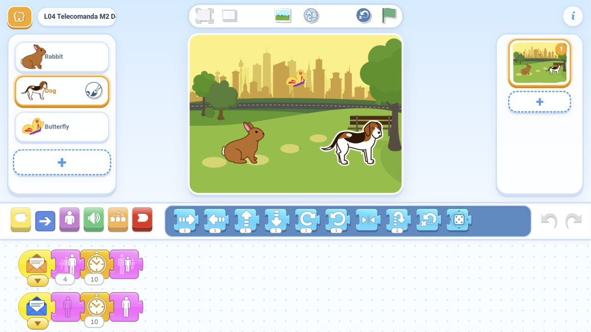

Magia la distanță
Un tap pe iepure. Trucul se vede numai la câine.
Atingi un personaj și altul face trucul. Copiii conectează mesaje colorate, aleg cine răspunde și construiesc un spectacol în lanț.
Folosim Rabbit, Dog, Butterfly și Park din biblioteca aplicației. Copiii construiesc totul pe tabletă, fără importuri sau descărcări.
Un tap pe iepure. Trucul se vede numai la câine.
Două personaje de atins. Două reacții diferite ale câinelui.
Iepure → câine → fluture. Fără alte atingeri. Toți termină normali și vizibili.
6-8 și 8-10 minute suplimentare. Pentru cei care termină devreme; păstrăm pauza, provocarea dificilă și salvarea.
Un expeditor. Doi destinatari. Două trucuri care se pot repeta.
Iepurele ascunde. Fluturele arată. Câinele poate primi mesaje și ascuns.
